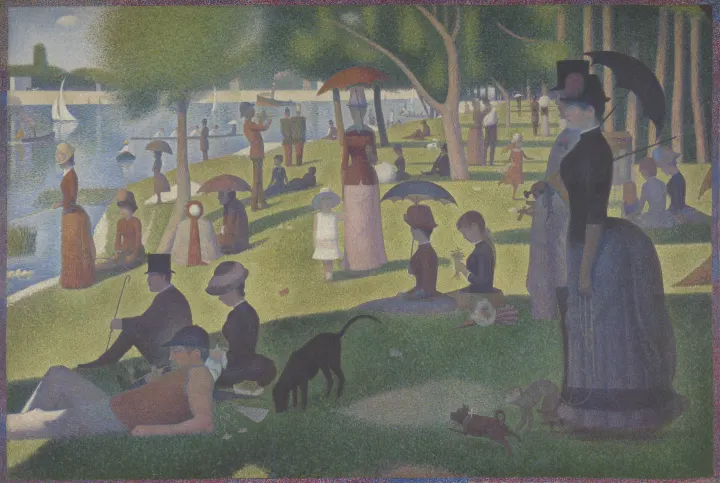
A Sunday on La Grande Jatte
Georges Seurat, 1884 · 6 things to find
Dogs 3, Monkey, Butterfly, Girl in white
A seek-and-find game for children. Nothing is drawn on top of the art. The monkeys, the dogs and the eleven stars are the ones the painter put there, and a six-year-old can find every one of them.
On its way to the App Store.
This is a painting from the game, with the game's own hiding places. Tap or click what you find. A wrong tap costs nothing.
Henri Rousseau, Tropical Forest with Monkeys, 1910. National Gallery of Art, Washington. Tap a card to hear the word.
A child who cannot read yet can play alone. Every thing to find is shown as a small picture cut from the painting itself, with a count beside it.
The paintings sit in rows: animals, winter, night, children, the sea, flowers, fruit. Each card says how many things are hiding in it.
The whole painting fills the screen. Pinch to zoom up to four times and drag it around. The cards at the bottom show what to look for, and tapping one says its name aloud.
A green ring, a small bounce and the word spoken. The counter moves from 1 / 3 to 2 / 3. Stuck? The lightbulb pulses on one thing that is still hiding.
Finishing a painting earns a sticker: a detail cropped from that painting. It goes into the sticker book, one slot for each painting.
Most hidden-object games paste small cartoons on top of a picture. This one started from the opposite idea: the painting is already full, and the job is to get a child to look at it.
Every thing to find is a real detail of the artwork. The monkey on Seurat's riverbank has been there since 1884. No stickers, no sprites, no emoji laid over a painting.
If the game says three dogs, the painting has three dogs. Each painting is scanned at full size before a count is written down. A thing we cannot count for certain is left out.
There is no timer, no score and no lives. A tap in the wrong place makes a soft ripple and nothing else. Nobody loses.
Tap areas are generous on purpose, and each painting has only a handful of things to find. The Starry Night is the exception: counting its eleven stars is the whole fun.
Every name is spoken in English, when a card is tapped and again when the thing is found. Menus follow the device: Turkish on a Turkish device, English otherwise.
The lightbulb makes one hiding place pulse for three seconds. The child still has to see it and tap it.
The exact-count rule exists because of a mistake. An early build asked for two umbrellas in a painting that has about eight. A child who taps a real umbrella and is told no has been lied to by the game.
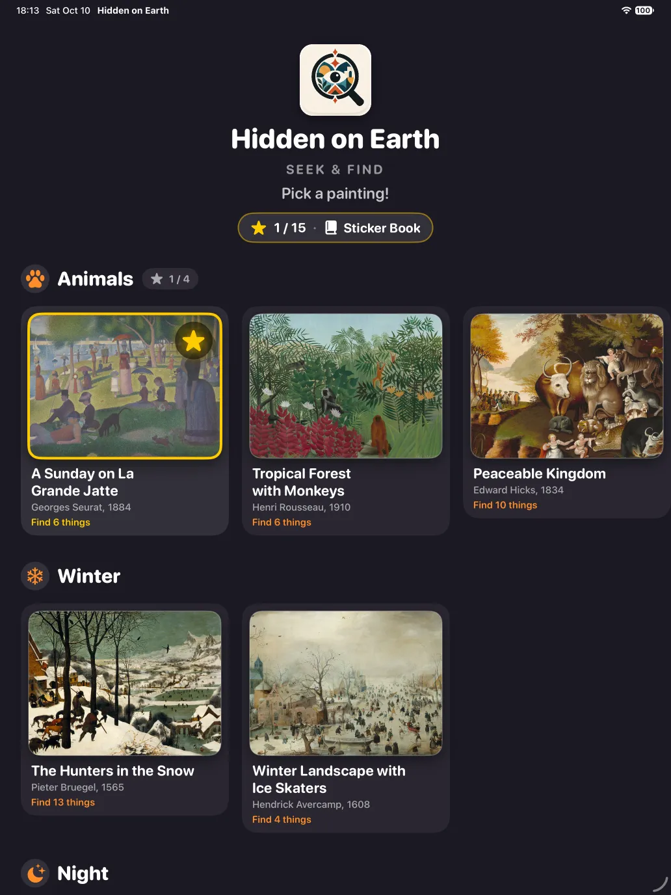
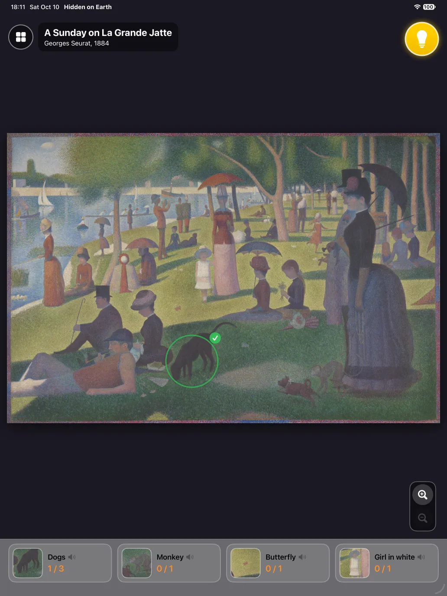
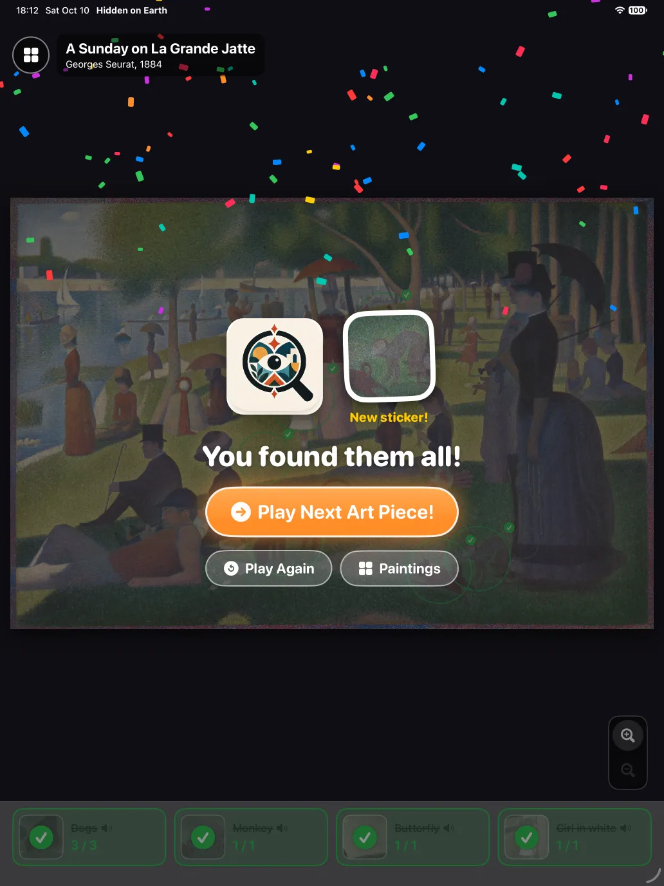
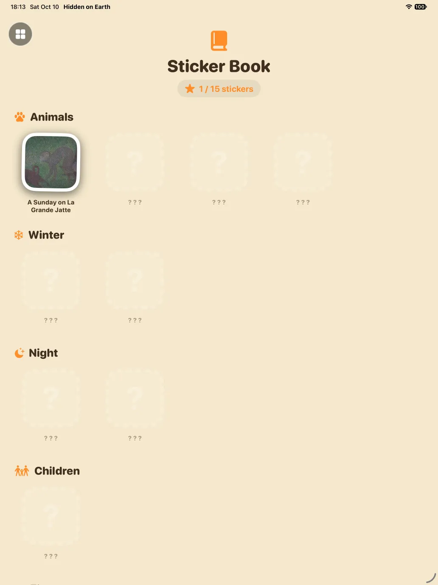
From Bruegel in 1560 to Rousseau in 1910. All of them are in the public domain, most from museum open-access programmes. A number after a name is how many of that thing the painting holds.

Dogs 3, Monkey, Butterfly, Girl in white
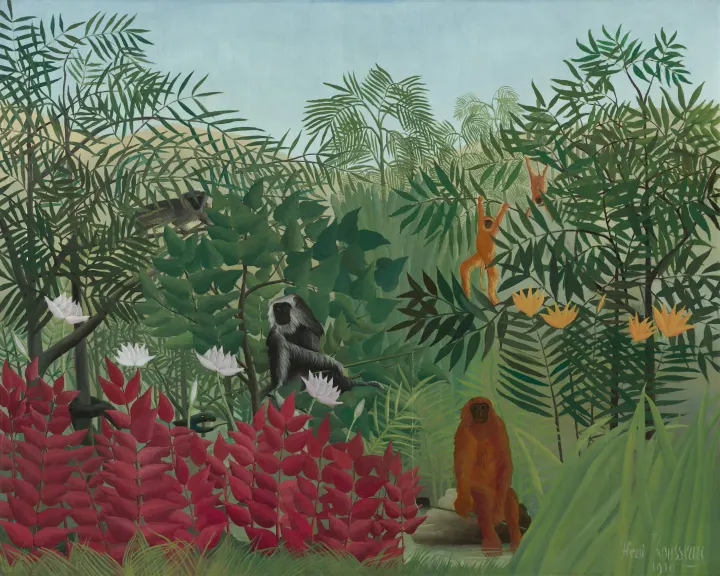
Monkeys 5, Snake
Lion, Leopards 2, Bears 2, Wolf, Lamb, Children 3
Tiger, Tiger's tail, Tiger's paws 2, Red flowers, Feathery plants 2, Painter's signature
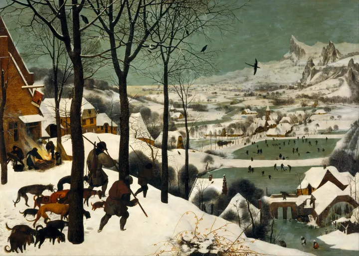
Hunters 3, Fire, Church tower, Big bird, Bridge, Inn sign, Mountains, Birds on the branches 3, Red roof
Church tower, Fishing net, Red sleigh, Fallen skater
Moon, Lions 2, Elephant, Snake, Flute player
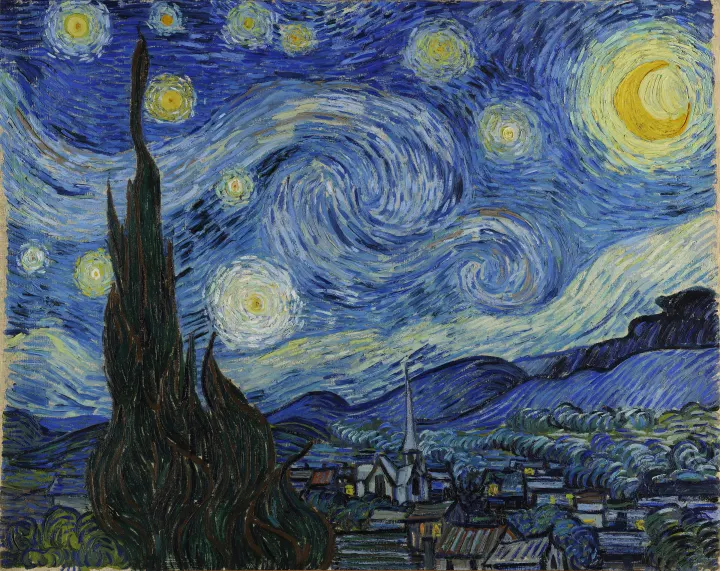
Moon, Cypress tree, Church tower, Stars 11, Swirl in the sky, Mountains, The village
Barrels 2, Hoops 2, Hobby horse, Boy on stilts
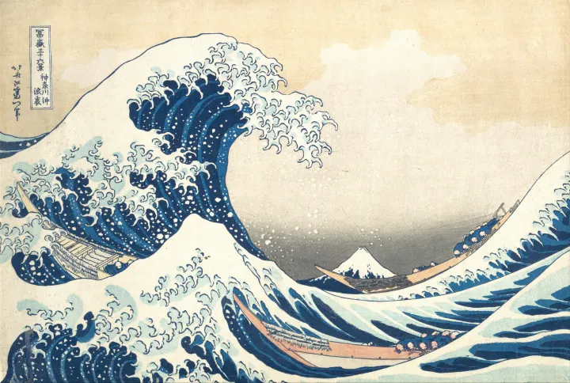
The big wave, Boats 3, Mount Fuji, Japanese writing 2
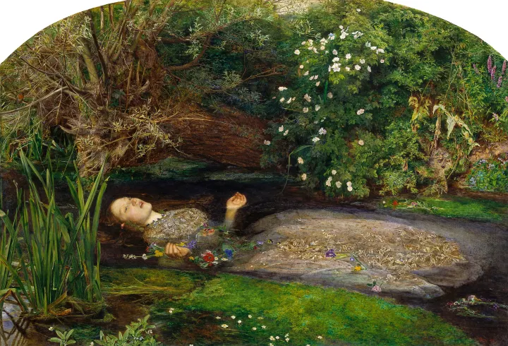
The lady in the water, Her hands 2, Tree trunk, Pink flowers 2, Red poppy, Little bird
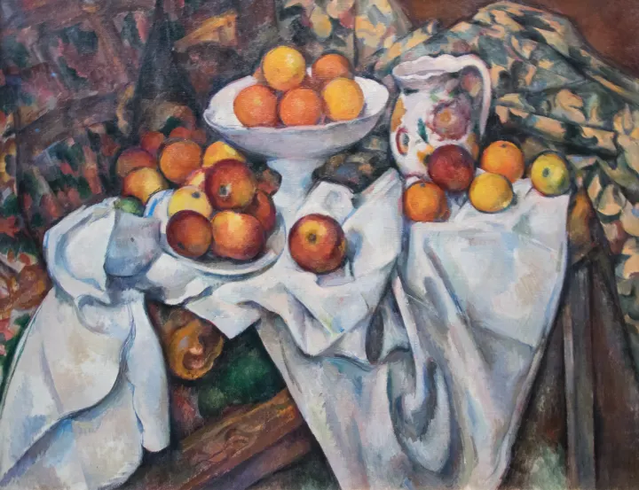
Jug, Oranges in the bowl 5, Fruits next to the jug 5, Plate of apples, Apples on the cloth 2, White cloth
The last row in the game is called Your collection. It holds 3 drawings by the six-year-old the game was made for. Sources and licences for every painting are on the credits page.
No account, no sign-in, no analytics. The app makes no network connections at all, so there is nothing to send and nobody to send it to.
No advertising and no in-app purchases. Nothing on the screen leads a child out of the game.
Finished paintings, stickers and half-finished paintings are saved on the device only. Deleting the app removes them.
No camera, microphone, photos or location. The spoken words come from the device's own built-in voice.
The full text is in the privacy policy. Questions go to support.
He is six, he likes looking for things, and he is learning English. That is why there is no clock, why the taps are forgiving and why every word is said aloud. Three of his own drawings are in the game beside Van Gogh and Hokusai, credited to Dünya Üçer, 2026.